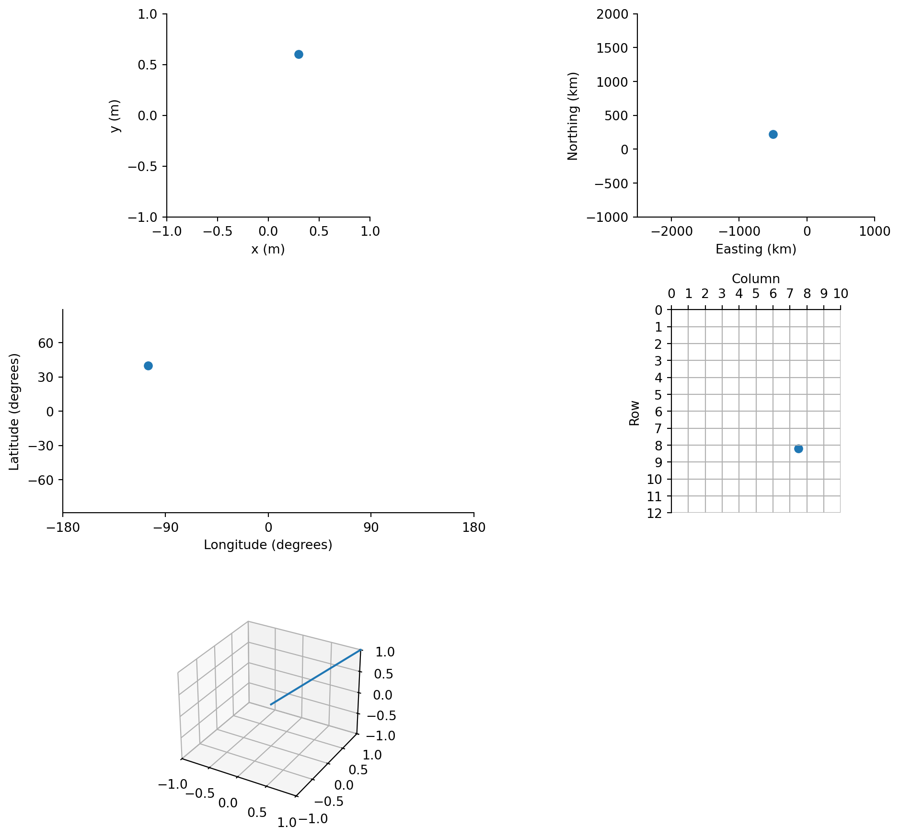

Almost all of the data archived by NSIDC is geospatial data. That is data that is tied to a location on Earth. Geospatial data is also called geographic data and information, georeferenced data and information, or geodata and geoinformation.
Figure 1 shows sea ice concentration data for September 2025 from NSIDC’s Sea Ice index. The colored image draped over a satellite perspective view, represents the amount of sea ice in 25 km by 25 km grid cells, expressed as a percentage, for thousands of grid cells. Each of these grid cells is related to a location on Earth through a pair of coordinates and set of rules that transform these coordinate pairs into locations on the Earth. This set of rules is called a Coordinate Reference System or CRS. This section of the NSIDC Data Cookbook provide an introduction to Coordinate Reference Systems in general and to the Coordinate Reference Systems used for NSIDC data.
Tip
If you want to skip the background and just learn about the main Coordinate Reference Systems used at NSIDC go to Section 6.
Code
import matplotlib.pyplot as pltimport cartopy.crs as ccrsimport xarray as xrimport rioxarray# Set display projection as satellite perspectiveprojection = ccrs.NearsidePerspective( central_latitude=65., central_longitude=-45., satellite_height=10000000.0 )# Open example datads = xr.open_dataset("../example_data/N_202509_concentration_v4.0.tif", engine="rasterio").squeeze()# remove data flags and scale to 0 to 100ds['band_data'] = ds.band_data.where( (ds.band_data >0) & (ds.band_data <=1000) ) /10# Define CRS of sea ice data using EPSG for NSIDC Polar Stereographic Northsrc_crs = ccrs.epsg(3411)# Create plotfig = plt.figure(figsize=(5, 5))ax = fig.add_subplot(1, 1, 1, projection=projection)ax.set_global()ds.band_data.plot( ax=ax, transform=src_crs, cbar_kwargs=dict(shrink=0.7, label='%'), cmap='Blues', )ax.coastlines(resolution='110m')ax.gridlines()ax.set_title('');
You are probably familiar with two common ways to represent geospatial data. The first is on a globe. To a first approximation, the Earth can be represented as a sphere1. A globe is a scaled representation of a spherical representation of Earth, using latitude and longitude as coordinates2. Figure 2 (a) shows an example of this approach from 1782 that was used to show the voyages of Captain James Cook. A modern example of a globe, is NOAA’s Science on a Sphere, which can be seen at over 175 locations around the World. However, even a desktop globe, let alone a room-size digital globe, is cumbersome. Doing calculations on a sphere is also difficult.
A more common approach is to represent the Earth and geospatial data on a two-dimensional plane, either a flat sheet of paper or a screen, that we call a map. The Mercator map shown in Figure 2 (b) is an early example of a two-dimensional representation of Earth for navigation designed by Gerardus Mercator.
These two ways of representing geospatial data are examples of coodinate systems. The globe is a spherical coordinate system that uses latitude and longitude as coordinates. The Mercator map is a two-dimensional cartesian coordinate system. A coordinate system is one component of a Coordinate Reference System. Coordinate Systems are described in more detail in Section 3.3. The Mercator map is also an example of another component of a Coordinate Reference System, the map projection. A map projection is a set of rules to transform coordinates from a spherical coordinate system into a two-dimensional cartesian coordinate system. Map projections are desribed in more detail in Section 3.5.
(a) John Newton and William Palmer globe, 1782
(b) The Mercator world map of 1569
Figure 2: Ways of representing geospatial data
Coordinate Reference Systems not only tell us how coordinates on a map or globe relate to the Earth but also how locations with different coordinate reference systems relate to each other. As you will see below, a point in one dataset with coordinates (40 \(^\circ\)N, -110 \(^\circ\)E) is not same as a point with the same coordinates in another dataset, if that dataset has a different coordinate reference system.
Geospatial Data Models
Maps and globes are great fun to paw over and are still very useful but most analysis in the Earth Sciences is done with digital versions of geospatial data. To represent this data in a digital format, we need a data model. A data model is a standardized way of representing data.
There are two broad categories of digital geospatial data model:
vector data;
raster data.
Note
Vector and raster data are not unique to geospatial data. Raster and vector data models are used widely for computer graphics. JPEG, PNG and TIFF image formats all use the raster data model. Vector data models are used by SVG formats and CAD3 packages. The addition of a CRS is what makes these data models, geospatial data models.
Vector data consists of points, lines and polygons. These are called features. Figure 3 shows examples of these three basic vector feature types.
Figure 3: Vector point, line and polygon features.
Each point, line and polygon in Figure 3 is a discrete feature. A point is defined by a single set of coordinates (\(x\),\(y\)). Points are zero-dimensional. That is they have no area, length or width. An example of a dataset with point features is the location of weather stations in the US Historical Climatology Network (?@fig-vector-ushcn). Each weather station is defined a latitude and longitude. Attributes are associated with stations, such as station name, USHCN ID, elevation, state, etc.
#| label: fig-vector-ushcn#| fig-cap: "Locations of weather stations in Colorado in the US Historical Climatology Network"# Change to executable once import sorted outimport matplotlib.pyplot as pltimport cartopy.crs as ccrsimport cartopy.feature as cfeaturefrom cookbook_utils.io import load_ushcn_stationsushcn_stations = load_ushcn_stations()ushcn_stations.head()#projection = ccrs.AlbersEqualArea(# central_longitude=-100.,# central_latitude=40.#)##fig, ax = plt.subplots(subplot_kw={"projection": projection})#ax.set_extent([-109.1, -102., 36.99, 41.1], ccrs.PlateCarree())#ax.add_feature(cfeature.STATES)#ushcn_stations[ushcn_stations.state == "CO"].to_crs(projection.to_wkt()).plot(ax=ax, aspect=1)
A line is defined by multiple points, called vertices. Vertices are shown as black dots in Figure 3. A pair of vertices define a single line segment. Lines are one-dimensional with only a length. ?@fig-vector-mosiac shows the drift of the RV Polarstern during the MOSIAC expedition in winter 2019/2020. The drift track shown here consists of line segments that represent each day’s drift.
#| label: fig-vector-mosaic#| fig-cap: "Drift track of the RV Polarstern during the MOSAiC expedition
A polygon consists of line segments that form a closed boundary where the last vertex of the last line segment matches the first vertex of the first line segment. A polygon has an area and a perimeter. Lines and polygons also have a direction which is set by the order in which vertices are defined.
Raster data is a rectangular array of cells. Each cell has a set of coordinates that relate that cell to a location on Earth. Usually, cell coordinates refer to the center point of each cell. Each cell in a raster has a value. All values in a raster are for the same quantity, e.g. air temperature, sea ice concentration.
#| label: fig-raster-example#| fig-cap: "A fasle color composite (NIR, Red, Green) of the Findel Valley from a Sentinel-2 image. Snow in the accumulation area of glaciers shows up as a bright blues and whites. Exposed ice in the ablation areas show as greys. Reds are vegetated areas.
Raster data can represent values at grid intersections or as values for the area of grid cells. For remote sensing data, cells are often interpretted as representing some average[^4] value for the area of the cell. For model data, for example from an atmospheric reanalysis, cell values represent the values of a quantity (e.g. air temperature or precipitation) at the center of the cell. It is important to understand how quantities represented by rasters are derived.
#| label: fig-raster-interp#| fig-cap: "Different interpreations of grid cell values in raster data"
?@fig-vector shows the outline of Findelngletscher, a glacier in the Swiss Alps, as polygon. The glacier outline was downloaded from the GLIMS Glacier Database. ?@fig-raster shows the same glacier as a raster.
Figure 4: Findelngletscher, Kanton Wallis, Switzerland, downloaded from the GLIMS Glacier Database, shown as a vector polygon and as a raster.
A Coordinate Reference System (CRS) defines the position, scale and orientation of a coordinate system with respect to an object. For geospatial data this object is the Earth.
Geospatial Coordinate Reference Systems are either Geodetic Coordinate Reference Systems or Projected Coordinate Reference Systems. Image Coordinate Reference Systems and Engineering Coordinate Reference Systems relate raster or gridded data, and survey data to Geodetic and Projected Coordinate Reference Systems.
Components of a Coordinate Reference System
A Coordinate Reference System comprises a coordinate system, a datum and reference ellipsoid. Projected Coordinate Reference Systems also include a projection method and projection parameters. The following sections describe each of these components.
Coordinate Systems
A Coordinate System is set of rules that define how coordinates (for example latitude and longitude, or x and y) are assigned to locations. A coordinate system has a dimension. The dimension determines the number of axes. For geospatial coordinate systems, the dimension is 2 or 3, so there 2 or 3 axes. Each axis has a name; a direction in which the axis increases; and units of the axis. The coordinate system also defines the order of the coordinates. For example, the centroid of the City of Boulder, Colorado is at latitude 40° 0′ 54″ N and longitude 105° 16′ 13.8″ W, which in decimal degrees are latitude 40.015 and longitude -105.2705. Expressed as coordinate pairs, the coordinates could be (40.015, -105.2705) or (-105.2705, 40.015), depending on if the coordinate system orders latitude first or longitude first.

Figure 5: Some coordinate system examples
A coordinate syetem is related to the Earth by a datum, which defines the origin of the coordinate system relative to a model of the earth.
From Iliffe and Lott (2008)
A coordinate system is defined by a dimension (the number of axes), each axes has a coordinate associated with it. Each axis of a coordinates system has the following attributes: - the name or abbreviation of the axis (e.g. Latitude); - the sequence number of the axis so that coordinate order is define (e.g. (x,y,z) or (z,y,x)); - the direction of the axis in which coordinates increment; - the units of the axis.
Ellipsoid and Datums
Datum: A datum is the information that fixes a coordinate system to an object (e.g. Earth). A Geodetic datum is a datum that defined the relationship of a coordinate system to an ellipsoidal model of Earth with the Geoid (I&L say real Earth).
The size and shape of the best fitting ellipsoid to the Earth is GRS 1980.
International Terrestrial Reference System (ITRS) describes a 3 dimensional cartesian coordinate system in which the direction of the Earth’s rotation axis and speed of rotation are defined. These change and the International Earth Rotation and Reference Systems Service (IERS) monitors and predicts the Earth’s rotation and the movement of it’s poles. This information is essential to determine the position of a satellite in a terrestrial (reference) system.
For a global datum, the prime meridian is defined and allows for the movement of the poles (precession and nutation). Note: the prime meridian does not agree with the old Greenwich Observatory and may be off by 102 m. Greenwich prime meridian is defined by IERS.
Ellipsoid - the Earth is not a sphere but an oblate spheroid of revolution - discovered by Newton. Confirmed by measurements of length of arc.
The geoid - the figure (shape) of the Earth if it were measured at mean sea level - involves gravity. The geoid is an undulating surface that deviates from a well fitting ellipsoid by ~ 100 m.
Reference ellipsoid defined by: 1. semi-major and semi-minor axes; 2. semi-major axis and flattening; 3. semi-major axis and eccentricity;
These are all related.
Newton flattening 1/~300. Add WGS84 for current estimate.
A datum is a smooth mathematical surface that closely fits the mean sea-level surface - from @snyder
Earth centered datums - e.g. WGS84 - no local reference point. The center of the Earth is the reference point.
\[
b = a(1 - f); f = 1-b/a
\]\[
e^2 = 2f - f^2; \\
f = 1 - (1 - e^2)^{1/2}
\]
Map Projections
for . For a full treatment, please consult @snyder_projections_
Projection parameters - depend on projection type. But at the very least require a datum or reference ellipsoid. Geographic coordinates that relate the projected surface to this sphere or ellipsoid. This defines the origin of the projected coordinates. Definitions also include false northings and false easting if the origin of the projected coordinates is not at the center of the projection???.
Terrestrial Reference Frames
How can I define a map projects of CRS in a data file?
NetCDF and CF-Conventions
Include a link to NSIDC projection definitions
GeoTIFF
Geographic Coordinate Systems
A Geographic Coordinate System is a spherical or ellipsoidal coordinate system with coordinates latitude \(\phi\), longitude \(\lambda\), and height \(z\). Latitude and Longitude are defined relative to a reference ellipsoid. There are many reference ellipsoids, so a full definition of geographic coordinates requires a full specification of the coordinate reference system. Check! Most global datasets, GPS and satellites use the WGS84 ellipsoid.
Two levels of abstraction are required to define latitude and longitude. First a model of the surface of the Earth is required. This model approximates mean sea level over the oceans and continues this surface under the continents. The second step is to approximate the geoid with a mathematical definition of the surface of the geoid. A simple solution is to use a sphere. However, it is more accurate to use an Ellipsoid.
The latitude of a point on the reference ellipsoid is the angle formed by the normal to the reference surface at the point of interest, and the plane of the Equator or Equatorial Plane. The Equatorial plane is perpendicular to the Earths axis of rotation.
To a better approximation, the Earth can be represented as an ellipsoid, or oblate spheroid, with the polar axis about 22 km shorter than the equatorial axis. See @ellipsoids-and-datums for more information.↩︎